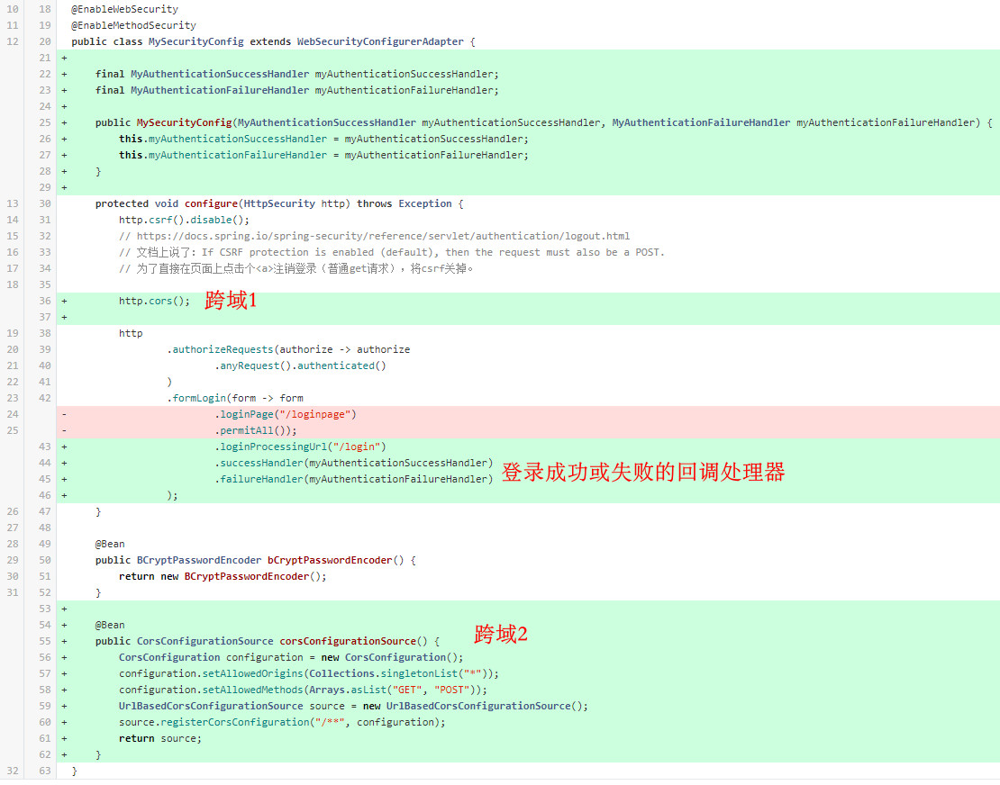

尽管我已经开始怀疑起前后端分离的意义了，但这事儿还是得做下去，也不是特别难，这篇分述前后端各自要做的事。
前端 index.html
因为 Spring Security 的 formLogin 默认是按“表单”提交的，所以 toLogin() 方法里有两点稍微特殊：1) 提交数据需要为 a=1&b=2 这样形式的字符串，2) 请求配置里显式声明Content-Type这个头的值为’application/x-www-form-urlencoded’
1 | <div id="app"> |
后端
代码变动也不多，主要是添加了两个回调处理器，设置允许跨域

登录设定
可能需要看 org.springframework.security.config.annotation.web.configurers.AbstractAuthenticationFilterConfigurer 才能知道 formLogin 中要改的有：1) loginProcessingUrl, 2) successHandler, 3) failureHandler
1 | public class MySecurityConfig extends WebSecurityConfigurerAdapter { |
1 | @Component |
1 | @Component |
跨域
先看 文档, 说了要做两处设置：开启 http.cors(withDefaults()), 然后暴露一个 CorsConfigurationSource Bean。自己代码里http.cors()没传入withDefaults()，按 samples库示例文件 可知它来自 org.springframework.security.config.Customizer 这个类。1
2
3
4
5
6
7
8
9
10
11
12
13
14
15
16
17
18
19
20
21
public class WebSecurityConfig extends WebSecurityConfigurerAdapter {
protected void configure(HttpSecurity http) throws Exception {
http
// by default uses a Bean by the name of corsConfigurationSource
.cors(withDefaults())
...
}
CorsConfigurationSource corsConfigurationSource() {
CorsConfiguration configuration = new CorsConfiguration();
configuration.setAllowedOrigins(Arrays.asList("https://example.com"));
configuration.setAllowedMethods(Arrays.asList("GET","POST"));
UrlBasedCorsConfigurationSource source = new UrlBasedCorsConfigurationSource();
source.registerCorsConfiguration("/**", configuration);
return source;
}
}